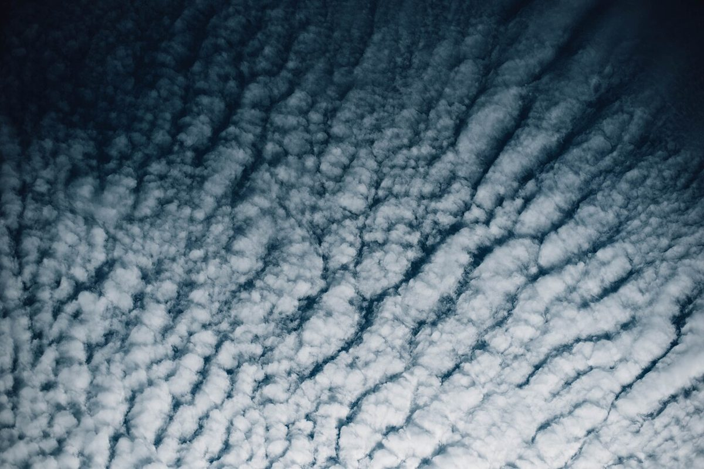
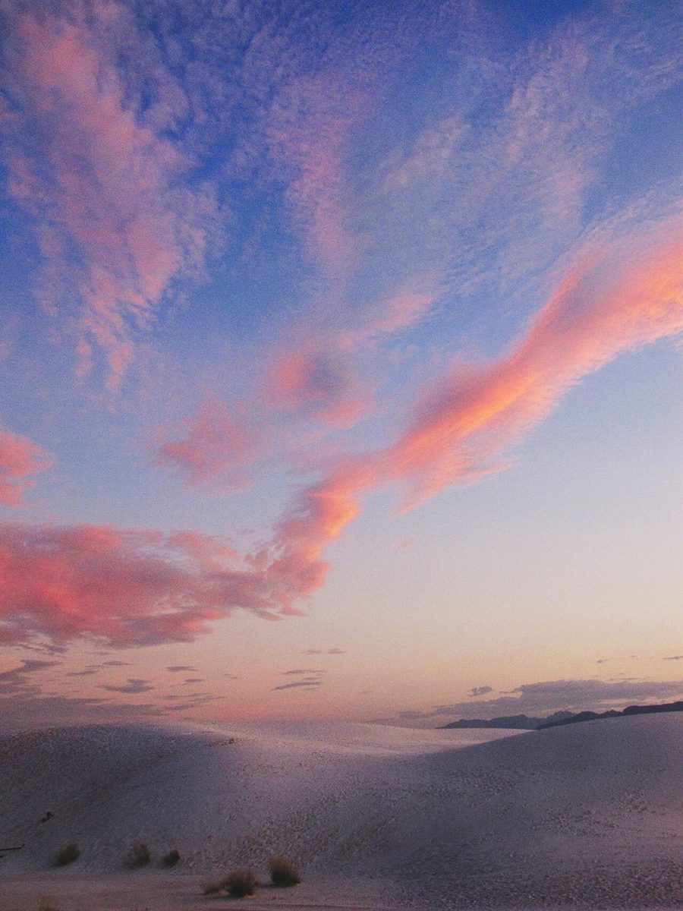

Cafe / 山梨県山梨市牧丘町
Coffee風の丘

山梨県山梨市牧丘町にあるカフェ「Coffee風の丘」のご案内ページです。営業時間やメニューなど詳しいことは準備中。電話は 080-6752-0830、まずはInstagramものぞいてみてください。
制作側の連想
「風の丘」から天気図を思い浮かべました
店名の由来は分かりません。制作側は「風」と「丘」という二つの言葉から、等圧線が描かれた天気図を連想しました。丸い線が重なる中心に「H(高気圧)」や「L(低気圧)」の記号を置く、あの図です。そこでこのサイトは、各ページを一枚の天気図に見立て、ページ番号の代わりに気圧の数字(1020〜1004)を付けています。制作側の連想で、お店の理念・由来とは無関係です。
第1図
空と湯気の観測(イメージ写真)
写真は国外または撮影地不明のフリー素材で、お店のある場所の空や商品ではありません。


凡例
このサイトの読み方
- H 高気圧の記号。ホームと店のことなど、はじめに読むページに置いています。
- L 低気圧の記号。まだ決まっていないこと(営業時間・メニューなど)は「準備中」と書きます。
観測所の情報
お店のこと(確認できたものだけ)
| 所在地 | 〒404-0004 山梨県山梨市牧丘町西保下６２７１−１０ |
|---|---|
| 電話 | 080-6752-0830 |
| 営業時間 | 準備中 |
| 定休日 | 準備中 |
| ご予約 | 準備中 |
| 駐車場 | 準備中 |
| SNS | Instagram @kazenookacafe |